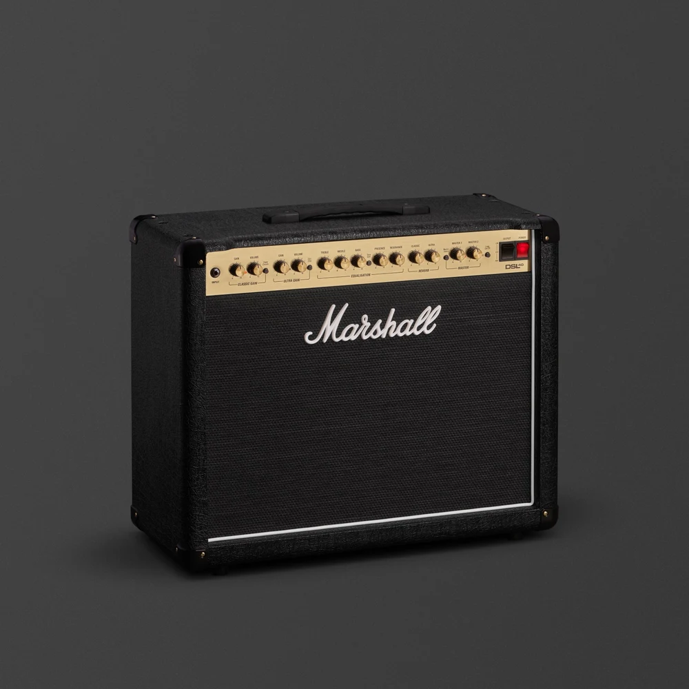
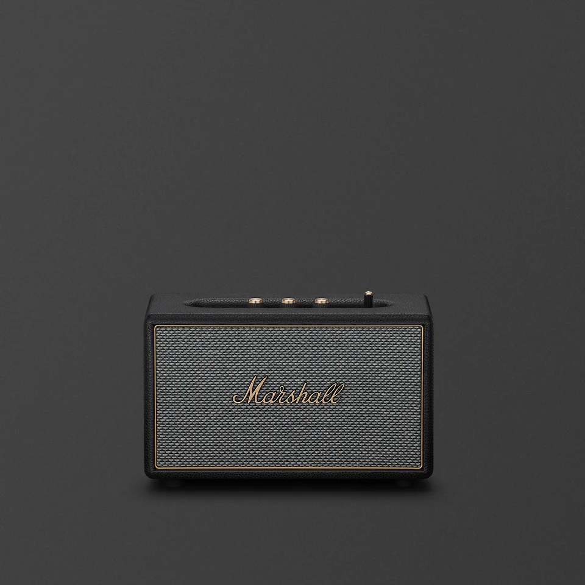

Amplifiers / 기타 앰프
DSL40
Combo
클린부터 오버드라이브까지.
두 채널과 출력 전환으로 연습실과 작은 공연장에 맞춰 연주하세요.
- 출력 전환
- 40 / 20W
- 올밸브
- 2채널
Marshall On stage
무대 바로 앞.
Marshall equipment
기타 앰프, 홈 스피커, 오버이어 헤드폰.

Amplifiers / 기타 앰프
클린부터 오버드라이브까지.
두 채널과 출력 전환으로 연습실과 작은 공연장에 맞춰 연주하세요.

Speakers / 홈 스피커
방 안에서 함께 듣는 음악.
Bluetooth와 AUX·RCA 입력으로 연결하세요.
콘센트 전원 · Bluetooth 5.3
Acton IV 자세히 보기
Headphones / 오버이어 헤드폰
주변 소음을 줄이고, 음악에 집중하세요.
다 듣고 나면 접어서 가방 안으로.
ANC 사용 시 최대 70시간 · 접이식 구조
Monitor III 자세히 보기Stories
제작 현장과 작은 공연장,
음악을 이어가는 사람들.